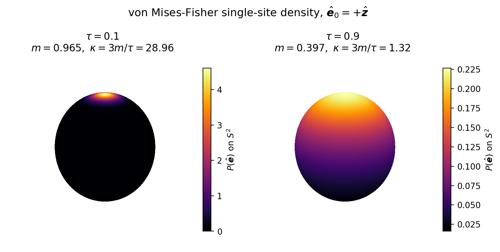

Mean-Field Sampling: Generating Thermal Spin Configurations
Theoretical background for the magesty vasp mfa command and the exported sample_mfa_incar API (implemented in the MfaSampling module). The sampler draws thermally distributed noncollinear spin configurations to be used as training data for the spin-cluster expansion. The formulation follows Tanaka & Gohda, arXiv:2410.11256 (2024) and arXiv:2512.04458 (2025); the same notation for the unit spin direction, order parameter, and Langevin function as the ordering-wavevector analysis is used throughout.
1. Single-Site Distribution on the Sphere
In the mean-field approximation each classical (unit-vector) spin $\hat{\boldsymbol{e}}_i$ at site $i$ feels the same site-independent effective field set by the average magnetization $\boldsymbol{m} = m\,\hat{\boldsymbol{e}}_0$, where $m \in [0, 1]$ is the reduced magnetization and $\hat{\boldsymbol{e}}_0$ is the common reference direction. The single-site Boltzmann weight on the unit sphere is $\exp(2\beta\,\boldsymbol{h}^{\text{MF}}\!\cdot\hat{\boldsymbol{e}}_i)$, with the mean-field field $\boldsymbol{h}^{\text{MF}}$ and inverse temperature $\beta = 1/k_B T$ defined as in the analysis page. Normalizing on $S^2$ gives the von Mises-Fisher (vMF) distribution
\[P(\hat{\boldsymbol{e}}_i) = \frac{3m/\tau}{4\pi\sinh(3m/\tau)}\, \exp\!\left(\frac{3m}{\tau}\, \hat{\boldsymbol{e}}_0\cdot\hat{\boldsymbol{e}}_i\right),\]
where the reduced temperature is
\[\tau = T / T_C^{\text{MFA}},\]
and $T_C^{\text{MFA}}$ is the mean-field Curie temperature (the same quantity returned by the analysis page). The distribution is peaked along $\hat{\boldsymbol{e}}_0$ for small $\tau$ and becomes uniform on the sphere as $\tau \to T_C^{\text{MFA}}$ (the fully disordered limit).
This is a vMF distribution with mean direction $\hat{\boldsymbol{e}}_0$ and concentration parameter
\[\kappa = \frac{3m}{\tau}.\]
The two regimes are shown below, with $\hat{\boldsymbol{e}}_0 = +\hat{\boldsymbol{z}}$: at low reduced temperature ($\tau = 0.1$, $m = 0.965$, $\kappa = 28.96$) the density is sharply peaked into a cap around $\hat{\boldsymbol{e}}_0$ (nearly ordered), whereas near the Curie point ($\tau = 0.9$, $m = 0.397$, $\kappa = 1.32$) it is only weakly polarized and approaches a uniform sphere (disordered).

\[\kappa\]
is exactly the single-site Boltzmann factor $2\beta h^{\text{MF}}$: for a homogeneous ferromagnet $h^{\text{MF}} = J_0\, m$ with $J_0 = \eta_{\max}(\boldsymbol{\mathcal{J}}(\boldsymbol{0}))$, and combining with $k_B T_C^{\text{MFA}} = \tfrac{2}{3} J_0$ yields $2\beta h^{\text{MF}} = 3m/\tau$.
2. Magnetization–Temperature Self-Consistency
The reduced magnetization $m$ and reduced temperature $\tau$ are not independent: fixing one determines the other through the mean-field self-consistency equation. Specializing the single-site order-parameter relation $\boldsymbol{m} = L(2\beta h^{\text{MF}})\,\hat{\boldsymbol{h}}^{\text{MF}}$ to the homogeneous ferromagnet gives
\[m = L\!\left(\frac{3m}{\tau}\right) = \coth\!\left(\frac{3m}{\tau}\right) - \frac{\tau}{3m}, \qquad L(x) = \coth x - \frac{1}{x},\]
where $L$ is the Langevin function. For a given $\tau \in (0, 1)$ this is solved for $m$ numerically (thermal_averaged_m via a one-dimensional bracketed root find); the inverse map $m \mapsto \tau$ (tau_from_magnetization) solves the same equation for $\tau$. Either control variable may therefore be specified at the command line (tau or m); internally both reduce to the same $(m, \tau)$ pair and hence the same concentration $\kappa = 3m/\tau$.
Consistency of the drawn ensemble
The mean resultant length of the vMF distribution on $S^2$ is
\[A_3(\kappa) = \coth\kappa - \frac{1}{\kappa} = L(\kappa),\]
i.e. the same Langevin function. The expected projection of a sampled spin onto the reference axis is therefore
\[\langle \hat{\boldsymbol{e}}_0\cdot\hat{\boldsymbol{e}}_i \rangle = L(\kappa) = L\!\left(\frac{3m}{\tau}\right) = m,\]
so the ensemble-average magnetization of the drawn configurations equals the self-consistent $m$ that defined $\kappa$. This identity is the analytic check used to validate the sampler, rather than pinning it to any reference output.
Spin-spin correlation and the choice of $\tau$
In the mean-field approximation the spins are drawn independently from the same single-site distribution about $\hat{\boldsymbol{e}}_0$, so the two-site correlation factorizes. For distinct sites $i \neq j$,
\[\langle \hat{\boldsymbol{e}}_i\cdot\hat{\boldsymbol{e}}_j \rangle = \langle\hat{\boldsymbol{e}}_i\rangle\cdot\langle\hat{\boldsymbol{e}}_j\rangle = (m\,\hat{\boldsymbol{e}}_0)\cdot(m\,\hat{\boldsymbol{e}}_0) = m^2,\]
while the same-site value is fixed by the unit-vector constraint, $\langle \hat{\boldsymbol{e}}_i\cdot\hat{\boldsymbol{e}}_i \rangle = 1$. The (site-independent) spin-spin correlation between distinct sites is therefore simply $m^2$, which maps to a reduced temperature through the self-consistency of Section 2.
The mean-field Curie temperature $T_C^{\text{MFA}}$ differs from the true $T_C$ (e.g. the one obtained from Monte Carlo). At $T_C^{\text{MFA}}$ the mean-field description loses both long-range and short-range order at once: $m \to 0$, so the distinct-site correlation $\langle \hat{\boldsymbol{e}}_i \cdot \hat{\boldsymbol{e}}_j \rangle = m^2 \to 0$ as well, and the spins become completely random and uncorrelated. The true $T_C$ instead destroys only the long-range order while leaving short-range order intact above the transition. This is why one does not set $\tau = 1$ to model the real critical point, but tunes $\tau < 1$ so that the residual correlation $m^2$ matches a target degree of short-range order, as described next.
This gives a practical recipe for choosing the sweep value: pick $\tau$ (or equivalently $m = \sqrt{\langle \hat{\boldsymbol{e}}_i\cdot\hat{\boldsymbol{e}}_j \rangle}$) so that $m^2$ reproduces a target nearest-neighbor correlation, e.g. one reported near $T_C$ by Monte Carlo or dynamic spin-fluctuation studies. The values used for the materials in arXiv:2410.11256 (2024) are
| $\langle \hat{\boldsymbol{e}}_i\cdot\hat{\boldsymbol{e}}_j \rangle$ | $m = \sqrt{\langle \hat{\boldsymbol{e}}_i\cdot\hat{\boldsymbol{e}}_j \rangle}$ | $\tau$ |
|---|---|---|
| $0.50$ (bcc Fe) | $0.7071$ | $0.6261$ |
| $0.65$ (fcc Ni) | $0.8062$ | $0.4688$ |
These target correlations are taken from studies of magnetic short-range order above $T_C$ in Fe and Ni: N. B. Melnikov, G. V. Paradezhenko, and B. I. Reser, Magnetic short-range order in Fe and Ni above the Curie temperature, J. Magn. Magn. Mater. 473, 296 (2019); F. Walsh, M. Asta, and L.-W. Wang, Realistic magnetic thermodynamics by local quantization of a semiclassical Heisenberg model, npj Comput. Mater. 8, 186 (2022).
With them, for instance, magesty vasp mfa INCAR tau --start 0.6261 --stop 0.6261 --num-points 1 (or the equivalent ... m --start 0.7071 ...) draws configurations whose nearest-neighbor correlation matches the bcc-Fe target.
3. Exact Sampling Algorithm
Directions are drawn with the closed-form inverse-CDF construction for the three-dimensional ($p = 3$) vMF distribution (Ulrich 1984; Wood 1994), which is exact — no rejection step. The cosine $w = \hat{\boldsymbol{e}}_0\cdot\hat{\boldsymbol{e}}_i$ to the mean direction follows from a single uniform deviate $u \sim U(0, 1)$,
\[w = 1 + \frac{1}{\kappa}\,\ln\!\bigl(u + (1 - u)\,e^{-2\kappa}\bigr),\]
and the azimuth $\varphi \sim U(0, 2\pi)$ is uniform in the tangent plane. With $\{\hat{\boldsymbol{t}}_1, \hat{\boldsymbol{t}}_2\}$ an orthonormal basis of the plane orthogonal to $\hat{\boldsymbol{e}}_0$, the sampled direction is
\[\hat{\boldsymbol{e}}_i = w\,\hat{\boldsymbol{e}}_0 + \sqrt{1 - w^2}\,\bigl(\cos\varphi\,\hat{\boldsymbol{t}}_1 + \sin\varphi\,\hat{\boldsymbol{t}}_2\bigr).\]
As $\kappa \to \infty$ this concentrates onto $\hat{\boldsymbol{e}}_0$ ($w \to 1$); as $\kappa \to 0$ it reduces to a uniform draw on the sphere ($w$ uniform on $[-1, 1]$). Per-atom magnitudes are reattached after the direction is drawn, so $\lVert\boldsymbol{S}_i\rVert$ is preserved exactly.
4. Limiting Regimes and Numerical Guards
The scaled temperature is clamped to the open interval $(\texttt{MIN\_TEMP}, \texttt{MAX\_TEMP}) = (10^{-5},\, 0.99999)$, matching the two physical limits:
| Regime | Behavior |
|---|---|
| $\tau < \texttt{MIN\_TEMP}$ | Fully ordered ($m \to 1$, $\kappa \to \infty$). The input configuration is returned unchanged. |
| $\tau > \texttt{MAX\_TEMP}$ | Fully disordered ($m \to 0$). A vanishing concentration ($\kappa = 10^{-6}$) gives a near-uniform draw. |
| $\kappa < 10^{-12}$ | The inverse-CDF draw degenerates; a fully isotropic direction is used instead. |
| $\lVert\boldsymbol{S}_i\rVert < 10^{-10}$ | The spin is treated as zero and left untouched (non-magnetic site). |
Correspondingly, the inverse map returns $\tau = 1$ for $m \le 0$ (disordered) and $\tau = 0$ for $m \ge 1$ (ordered); magnetizations whose temperature falls outside the bracket are clamped to these limits.
5. Per-Atom Controls
Two atom subsets deviate from the default vMF draw, in addition to the optional global rotation:
- Fixed atoms (
--fix) keep their input directions instead of being sampled — e.g. to hold an impurity or a reference sublattice while the rest of the cell is thermalized. - Uniform atoms (
--uniform-atoms) have their direction redrawn uniformly on the sphere — the fully disordered, $\kappa \to 0$ (infinite-temperature) single-site limit — independently of the sweep value. Whereas a default atom partially aligns with $\hat{\boldsymbol{e}}_0$ by an amount set by $\kappa = 3m/\tau$, and a fixed atom stays perfectly aligned with its input, a uniform atom carries no mean-field alignment at all: its direction is isotropic for every $\tau$, including the low-temperature end of the sweep where the rest of the cell is nearly ordered. This models sites that are not part of the ordered network — e.g. a weakly coupled impurity, a sublattice you want held fully paramagnetic as a control, or an antisite whose moment averages to zero. The isotropic draw replaces the vMF draw for these columns (it is applied after sampling and overrides it), so the sweep value affects only the remaining atoms. If an index appears in both--fixand--uniform-atoms,--fixtakes precedence (it is reapplied last). Under--randomizethe global rotation is applied to uniform atoms as well, but since their distribution is already isotropic this leaves it statistically unchanged. - Quantization-axis randomization (
--randomize) applies a single random global rotation to each drawn configuration, so the reference axis $\hat{\boldsymbol{e}}_0$ is not pinned to a fixed Cartesian direction across the sample set. Fixed atoms are rotated by the same global rotation, preserving their orientation relative to the sampled spins.
All three preserve per-atom magnitudes and leave zero-norm spins untouched.
6. Usage
See Tools for the magesty vasp mfa command line interface and sample_mfa_incar for the programmatic API. A typical sweep over reduced temperature is
magesty vasp mfa INCAR tau --start 0.1 --stop 0.9 --num-points 9which writes one INCAR per drawn configuration, with both MAGMOM and M_CONSTR set and all other input keys preserved.